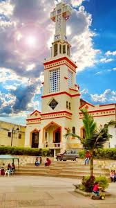
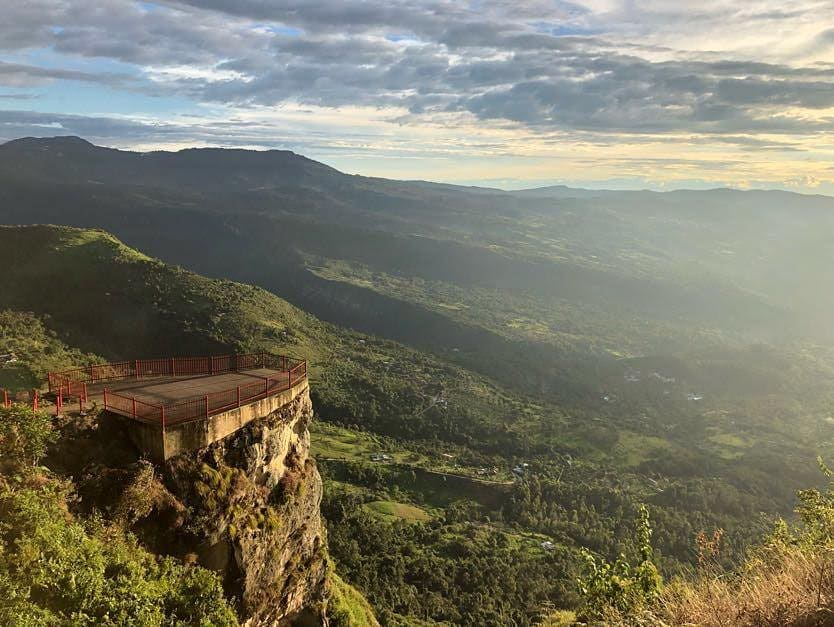
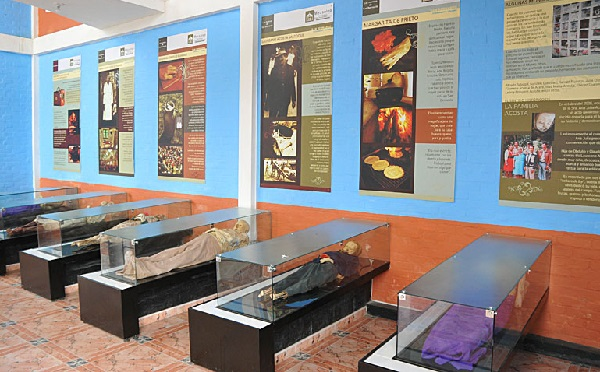
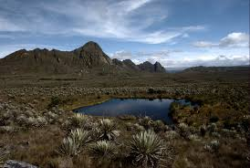

Facebook
Facebook Instagram
Instagram Whatsapp
Whatsapp Twitter
TwitterEl Pueblo
San Bernardo es un municipio colombiano del departamento de Cundinamarca, ubicado en la Provincia del Sumapaz, a 99 km de Bogotá. El municipio de San Bernardo es reconocido por ser una de las principales despensas agrícolas de la región debido a la gran fertilidad de sus suelos y variedad de climas en su territorio, lo que permite cultivar productos de climas cálidos y fríos durante todo el año. Sus principales productos son: mora, granadilla, tomate de árbol, curuba, gulupa, fresa, feijoa, pitaya, lulo, café, mango, naranja, mandarina, guanábana, aguacate, cebolla larga, arveja, habichuela, habas, arracacha, fríjol todo el año, mazorca, plátano, papa, guatila, balú.
Turismo
- Ferias y Fiestas
- Transporte
- Templo parroquial
- Caminos Reales
- Cementerio (visita a las momias)
- Cerro de Paquilo
- Cuevas Naturales
- El mausoleo de las momias.
- Piedra del Sol
- Las Lajas.
- Planta de tratamiento de agua.
- Muestra floral.
- Salto del Chiriguaco
- Visita a la chapa.
- Visita al paramo del Sumapaz
Plan de Recorrido
La Chapa
La chapa es un mirador, ubicado al sur-occidente de San Bernardo, limita con Pandi, desde alli se puede observar claramente el nevado del ruiz algunas ciudades y pueblos, es una hermosa vista, un paisaje natural hermoso, donde se puede ver claramente atardeceres marcados por los colores de la bandera colombiana. Un lugar lleno de hsitorias, mitos y leyendas. Allí muchos Bikers practican el deporte, esta montalla tiene aproximadamente 650 metros de alto, tambien se puede encontrar grandes rocas pintadas.
Mausoleo
Lo imperdible en San Bernardo es el cementerio con su Mausoleo de Momias. Se trata de un museo donde se exhiben habitantes humildes del pueblo que por razones genéticas o de alimentación al morir, sus cuerpos no se descompusieron sino que se calcificaron conservando intactas la piel y algunas partes del cuerpo. De acuerdo a la presentación de las momias, se pueden deducir aspectos de la cultura sanbernardina desde 1.957: formas de vestir, costumbres, creencias y demás datos acerca de los pobladores de la región. Con autorización de los familiares, junto a cada momia colocaron el nombre de la persona a la que correspondía, si era humilde, asistía a la misa, con quién estaba casada, etc.
Páramo del Sumapaz
El páramo de Sumapaz fue considerado como un lugar de amor para los aborígenes muisca. Fue asociado con las fuerzas sagradas de la creación y el origen del hombre, un dominio donde los humanos no deben entrar. El Páramo de Sumapaz es el páramo más grande del mundo. En el Parque Nacional Natural Sumapaz se encuentran representados dos de los principales ecosistemas de las montañas tropicales: el páramo y los bosques andinos. En el páramo se encuentran tres tipos básicos de ambientes: subpáramo, páramo propiamente dicho y superpáramo (Cuatrecasas 1958 tomado de Pedraza-Peñalosa et al,. 2004). En el bosque andino se encuentran las franjas de vegetación de bosque altoandino, andino y subandino.
Tabla de Actividades
Este es un listado de las cosas por hacer
| Actividad | Hora | |
|---|---|---|
| Espera Transporte | 4:50 am-5:00 am | |
| Partida | 5:00 am | |
| Desayuno | 6:30 am -7:30 am | |
| Instalación Hotel | 7:00 am- 8:00 am | |
| Refrigerio | 8:00am -8:30 am | |
| Tour | 9:00 am - 12:20 pm | |
| almuerzo | 12:30 pm- 1:25pm | |
| Segunda Parte del Tour | 1:30pm - 7:30pm | |
| Hospedaje- descanso | 8:30 pm |